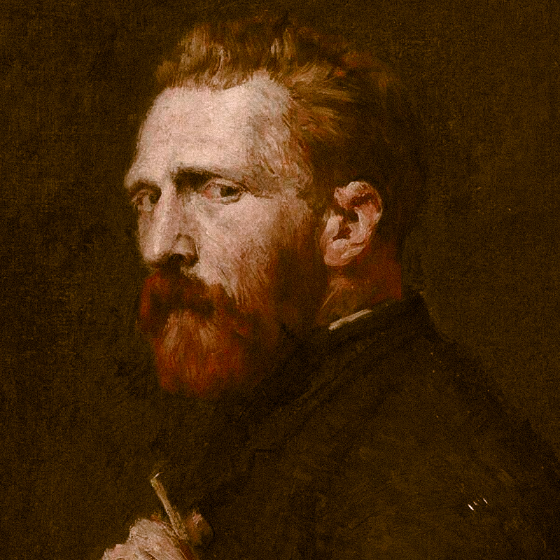
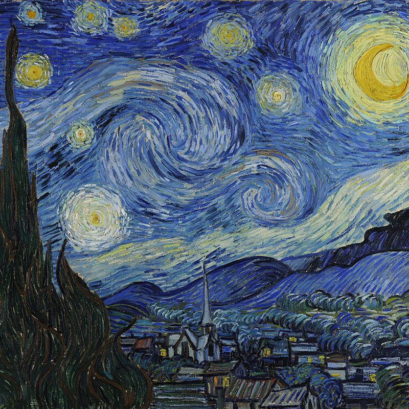
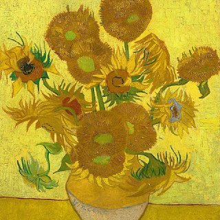
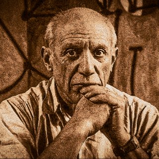
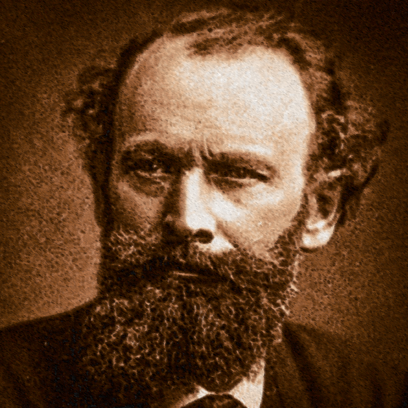

Post-Impressionist & Early Modern era
WHY THIS ERA IS THE GREATEST ?
No era changed painting faster or more radically. In roughly 70 years, a handful of visionaries dismantled everything the Renaissance had built — perspective, representation, naturalistic color — and rebuilt art on entirely new foundations of emotion, structure, and pure form. Van Gogh, Cézanne, and Picasso each launched a revolution so consequential that art history cannot be told without them. This is the era when painting became fully modern.

Vincent van Gogh
Vincent van Gogh was the defining pioneer of Post-Impressionism, a visionary whose influence transformed the trajectory of modern art. Much like Rembrandt, his brilliance lay in an uncompromising pursuit of emotional truth, though he traded classical realism for a raw, expressive use of color and form. Renowned for his revolutionary use of impasto—the thick, rhythmic application of paint—he possessed an unparalleled ability to project his inner psychological landscape onto the external world. Beyond his vibrant canvases, his prolific letters and obsessive studies of nature revealed a mind deeply attuned to the spiritual energy of the universe and the turbulence of the human spirit, cementing his legacy as a master of texture, intensity, and visceral storytelling.
The Starry Night
The creation of The Starry Night was a deeply emotional undertaking, painted in June 1889 during Vincent van Gogh’s stay at the Saint-Paul-de-Mausole asylum in Saint-Rémy-de-Provence. The work represents a radical departure from the literal observations of Impressionism. Rather than merely recording the view from his east-facing window, Van Gogh synthesized memory, imagination, and observation to create a visionary landscape. He utilized an innovative application of thick impasto, where the paint is applied so heavily that it creates a physical, sculptural relief on the canvas, capturing the turbulent energy of a sky that feels alive with cosmic motion.
The story of the painting is one of both psychological intensity and symbolic genius. Van Gogh utilized a vibrant, contrasting color palette—dominating the canvas with deep ultramarines and cobalt blues set against the glowing yellows of the stars and crescent moon—to express a sense of spiritual yearning. The towering, flame-like cypress tree in the foreground serves as a visual bridge between the earth and the heavens, a motif often associated with mourning and the afterlife in 19th-century culture. Despite Van Gogh himself initially viewing the painting as a "failure" that didn't communicate what he intended, it has since become the definitive masterpiece of Post-Impressionism, capturing the complexity of the human psyche through a sophisticated lens of rhythm and color.


The Sunflowers Series
The creation of the Sunflowers series was an ambitious undertaking executed during the summer and autumn of 1888 in Arles, France. The work represents a radical departure from traditional still-life painting, which typically treated flowers as decorative or delicate objects. Instead, Vincent van Gogh utilized a revolutionary "yellow on yellow" palette, pushing the boundaries of color theory by using newly invented chemical pigments like chrome yellow. He applied the paint with a vigorous, sculptural impasto, giving the flower heads a rugged, sun-baked texture that emphasized their physical weight and vitality.
The story of the painting is one of hope, friendship, and eventual heartbreak. Van Gogh created these vibrant canvases to decorate the "Yellow House" in anticipation of the arrival of his friend and fellow artist, Paul Gauguin, intended as a symbol of gratitude and artistic brotherhood. However, the paintings also capture a poignant narrative of the natural cycle; by including sunflowers in various stages—from full bloom to wilting and seeding—Van Gogh infused the series with a profound meditation on life and decay. Despite the tragic dissolution of his friendship with Gauguin shortly after, the Sunflowers remain a definitive masterpiece of modern art, capturing the raw power of nature through a sophisticated lens of light and emotional intensity.
Honorable mentions
These are some of the geniuses that should be mentioned because of their impact in the Post-Impressionist & Early Modern era.

Pablo Picasso
and Paul Cézanne were the two foundational titans who bridged the gap between 19th-century tradition and 20th-century modernism. Cézanne was the master of structure and perception, using a methodical, analytical approach to break landscapes and still lifes into their underlying geometric forms. His work is celebrated for its tectonic stability and the way he treated nature through "the cylinder, the sphere, and the cone."
Pablo Picasso, by contrast, was the master of reinvention and fragmentation, renowned for his radical deconstruction of perspective and his relentless stylistic evolution.The best pieces of Picasso are Guernica and Les Demoiselles d’Avignon, and for Cézanne are The Bathers and Mont Sainte-Victoire.

.png)